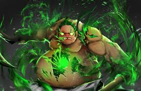

ВЫБЕРИТЕ ВИДЕО
Перетащите видео или выберите файл
НАСТРОЙКИ ОБРАБОТКИ
СЖАТИЕ
ОБРЕЗКА
Квадрат из 2000-х ⌄
Шакальная запись рабочего столаЦентральный квадрат 480×480, 12 FPS и намеренно низкое качество.

Плотное сжатиеОй... это я что ли?
РЕЗУЛЬТАТ
Путь будет выбран автоматически